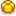

Lightning Rod
| Lightning Rod | |
| Collects energy from lightning storms and turns it into battery packs. | |
| Information | |
| Source | Crafting |
| Season | Spring • Summer • Fall |
| Sell Price | Cannot be sold |
| Crafting | |
| Recipe Source | |
| Ingredients | |
The Lightning Rod creates a  Battery Pack the day after getting hit by lightning during a storm. It is not necessary for the player to be on the farm when the lightning strike happens.
Battery Pack the day after getting hit by lightning during a storm. It is not necessary for the player to be on the farm when the lightning strike happens.
Lighting Rods also protect The Farm, because lightning that is not intercepted can strike Fruit Trees or destroy Crops, Trees and Farm Debris. Since rods do not protect a specific area, the exact placement of a rod on the farm has no bearing on its chance to intercept a lightning strike. A Lightning Rod has a very good chance of intercepting a lightning bolt if it isn't already processing one.[1]
After being hit, the Lightning Rod changes to a "processing" state for the remainder of the day and will not intercept any additional strikes, so multiple rods are needed to intercept additional strikes. The number of lightning strikes during one day is random, and increases with higher daily luck.[2]
A lightning rod is the reward for completing the  10,000 Bundle in the Vault.
Chance to Intercept
The chance that a lightning strike will be intercepted is inversely related to the percentage of lightning rods on the farm that are currently holding a charge (either pulsing or holding a battery pack). The exact probability is chance to intercept = 1 - (number of charged lightning rods / total number of lightning rods)²[2]. That is, if none of the lightning rods are currently holding a charge, a lightning strike is 100% guaranteed to be intercepted. If 50% of the lightning rods are charged, a lightning strike has a 75% chance to be intercepted. If 90% of the lightning rods are charged, a strike has only a 19% chance to be intercepted. At least one lightning rod must be on the farm to have any chance of intercepting a strike.
A non-intercepted lightning strike has a base 25% chance of hitting a feature on the farm, influenced by daily luck and luck buffs.
Notes
- Though it is possible to place lightning rods outside of the farm map, they will never get hit by lightning there, and thus will produce no battery packs.
- Storms (and thus lightning) never occur in Winter. Storms never occur on Ginger Island.
- More lightning will strike the longer the player stays awake, necessitating more lightning rods and giving potential to produce more Battery Packs.
- Placing a lightning rod on a Grass Starter will cause animals to be unable to eat the grass, making the grass stay in place and produce more grass every day without ever being entirely consumed by farm animals. This also works with decorations.
References
- ↑ "v1.07 beta branch Bugs/Discussion"
- ↑ 2.0 2.1 See Utility.performLightningUpdate() in the game code.
History
- 1.4: Lightning Rods are now ready to harvest the day after a storm, instead of 24 hours later. Lightning Rods can now be stacked in a player's inventory and in chests.